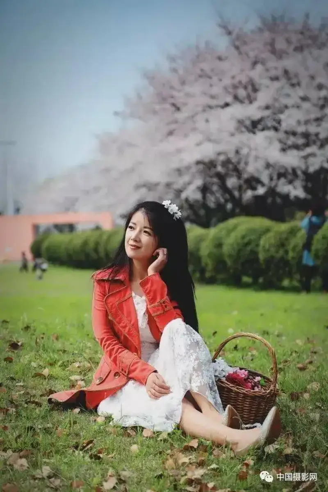
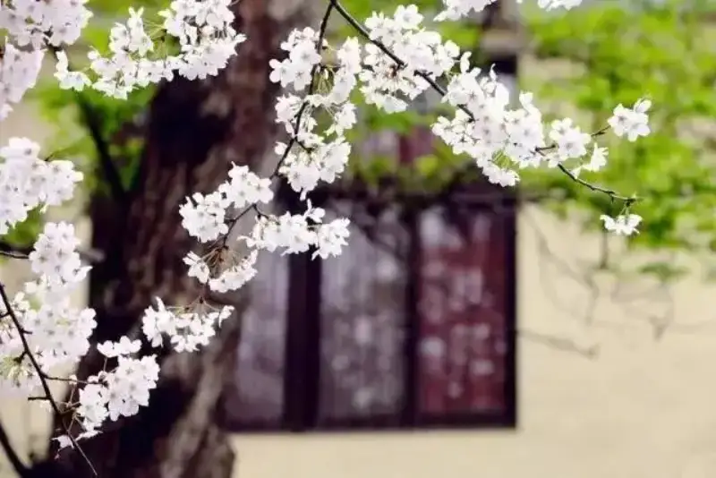
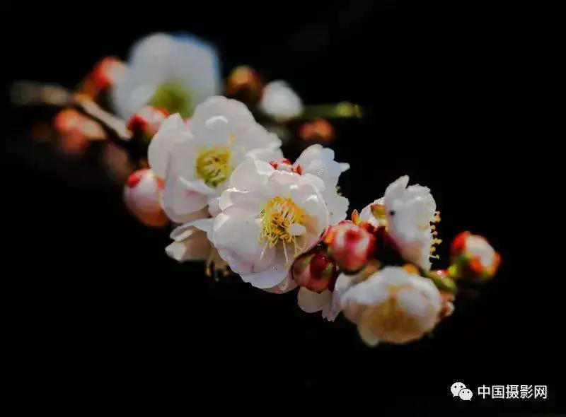
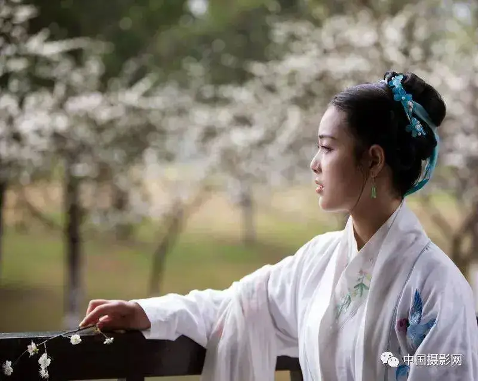
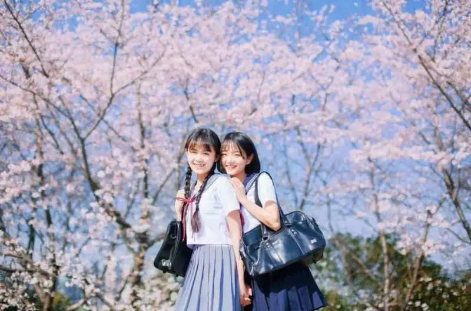
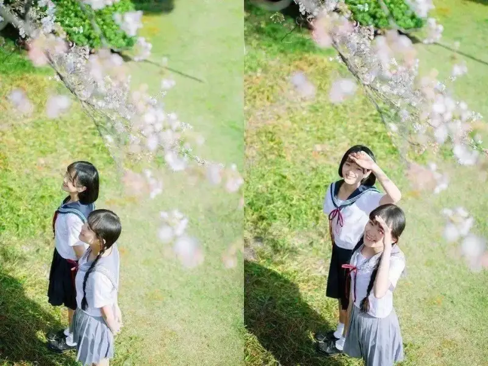
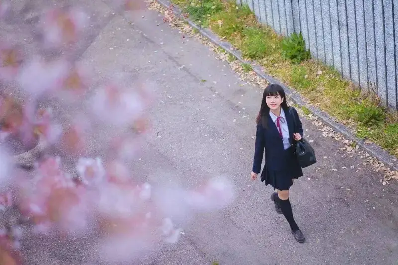
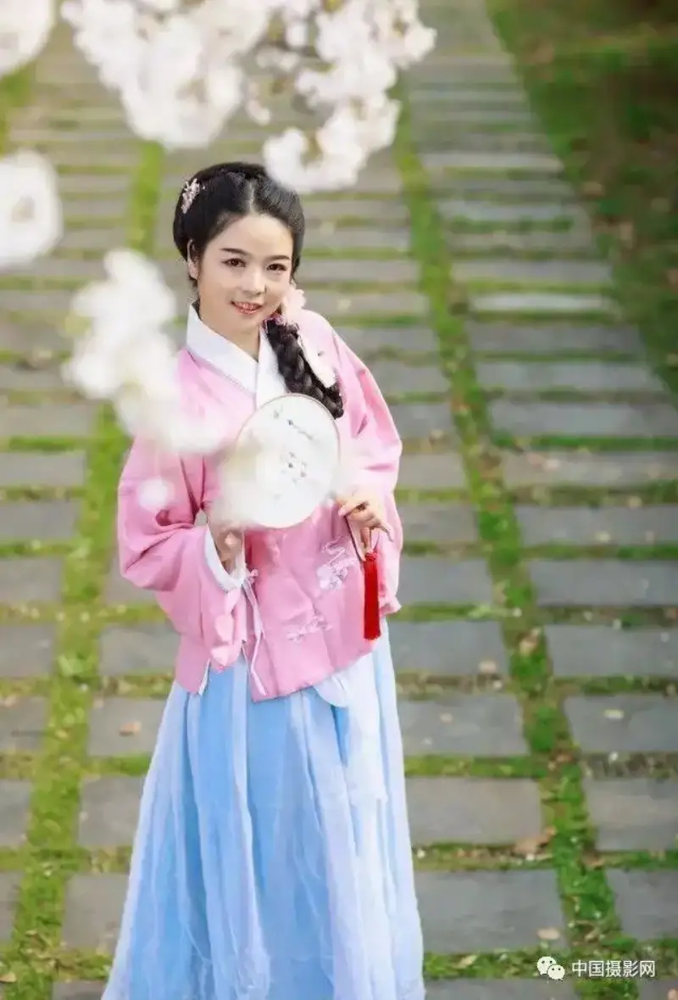
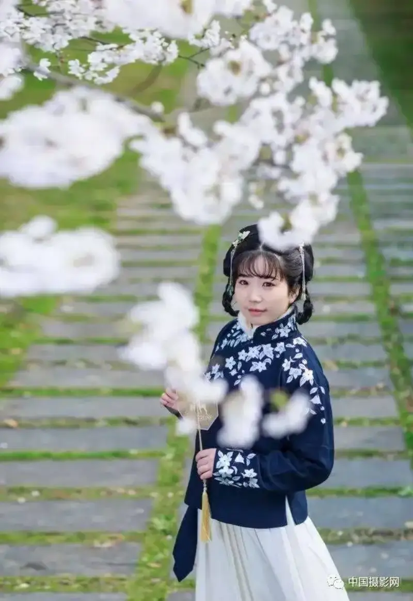
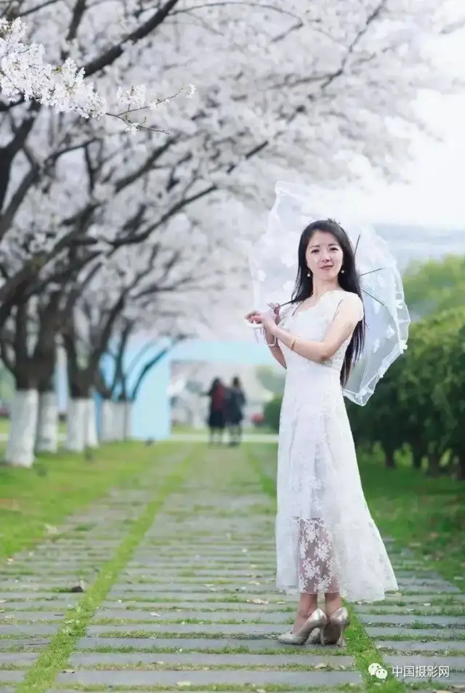

The warm breeze is kind,
the soft rain washes away care.
As sunlight climbs the branches,
the cherry blossoms that bloom in spring,
are perhaps the most stirring thing of all.
The fragrance that never ends,
and the colors that never fade,
have become a wish in many people's hearts.
The romance deep inside wakes up,
and the rush to chase the blossoms grows lively.
At the end of blossom season,
many friends have a plan,
to feel the snow of petals flying through the sky.
Model: sweet*Mi Photo director: Xia Yu
So how do you take
a great shot where person and flower share the beauty?
Below,
we introduce a few methods,
to show you how to shoot the most beautiful cherry blossoms,
and keep this flowery time of life!
Blur the Background
Set the aperture of your phone or camera
to its widest value,
move close to a single flower or a cluster to shoot,
and you can make the main subject in the foreground stand out,
blur the leaves and branches in the background,
add a sense of depth to the frame,
and keep the whole image from looking messy.
This way of shooting gives the image
a soft, hazy beauty.

Model: sweet*Mi Photo director: Xia YuBorrow the Scene and Compose with Care
Shooting flowers does not
have to mean only shooting the flowers.
Use a building in a classical Chinese style
as the background of the frame,
place the cherry blossoms within it,
and build a borrowed-scene relationship,
to reach a special mood.
Night Cherry Blossom Dazzle Photo: Xu Yujian @ A Jian
Night Cherry Blossom Dazzle Photo: Xu Yujian @ A Jian
Of course,
you can also try
other small elements,
such as a window,
or a touch of green.
This makes the photo far more lively,
and gives it more spirit.

Capture Detail Up Close
If you want different cherry blossom photos,
consider a close-up shot.

In Full Bloom Photo: Li Juqin @ Qinxin JiandanUnder a macro lens,
you can catch details a normal view cannot see,
such as the veins on a petal,
the pollen on the stamen,
or a small insect on the petal.
These finer effects
will bring you a surprise you did not expect.
Choosing the Light
Front light:
Cherry blossoms shot in front light are the simplest.
The exposure is easy to control,
and you can usually shoot against a blue sky.
To Youth Photo: Pan Zhinv @ Zhinv
Side light:
Shooting in side light
creates a contrast of light and dark,
and gives the blossoms more depth.
Spring Embroidery Photo: Qin Xiaoling @ A
Back light:
Shooting into the light is a good angle.
A flower in back light
shows the inner texture of the bloom better,
and a halo forms around its edges.
It is very beautiful.
But it asks for more skill.
If you want the soft look of a flower glowing through the light,
watch the exposure compensation when you shoot into the light.
Shoot the Reflection
Cherry blossoms that drift onto the water
have a style of their own.
Look closely,
and note the reflection on the water when you shoot.
Night Cherry Blossom Dazzle Photo: Xu Yujian @ A Jian
Finally,
To take a lovely photo like the cherry blossom goddess,
shoot it like this~
▼
What to Wear
Classical style
Girls who like Hanfu
can put on a beautiful period costume now.
Whether it is the style of the Qin or Han,
or the Tang, Song, Ming, or Qing,
stand beside the blossoms,
and the person is more delicate than the flower.

The Pear Blossom Girl Photo: Luo MengFresh and light
In spring, light and plain-colored dresses
and clothes suit a lovely girl best.
Under the peach blossoms,
or in the apricot blossom rain,
when you give a soft smile,
all the flowers seem to lose their color.
Model: sweet*Mi Photo director: Xia Yu
Model: sweet*Mi Photo director: Xia Yu
A standing half-body shot can be beautiful too.
Shoot upward to bring the blue sky into the frame.
The image feels fresh and bright at once,
and it suits girls who lack confidence in a full-body shot.
▼

Shooting Tips
Change your camera angle from time to time,
to show a different look of the young woman.
▼


Try to get a little closer to the flowers.
Bring the branch near,
use the blossoms as a prop,
and partly cover your face.
Build the look of a face and peach blossoms glowing together.
Then you do not have to fuss over slimming the face in editing~
▼

Model: Qingshui Photo director: Xia Yu
Model: Qincai Photo director: Xia YuPick a flower, cup a handful of petals,
hold them in your palm,
and give a slight smile to the camera.
The gentle look makes the heart move.
▼
Model: sweet*Mi Photo director: Xia Yu
If you want to bring out your charm more,
lovely girls can use a few small tricks.
Wear a hat or hold an umbrella,
hold a comic book or a storybook,
or carry a sketchpad or a guitar.
Be a youthful girl or a literary girl.
That is also quite nice.
▼

Model: sweet*Mi Photo director: Xia YuThe time is quiet and good.
The mountains have color, the water is warm,
The flower is more beautiful than the person, and the person more delicate than the flower.
As the steps of spring draw near,
the view before you grows more and more charming.
Go to the most beautiful spring to find your most beautiful self.
You will find
that this spring is beautiful beyond words~